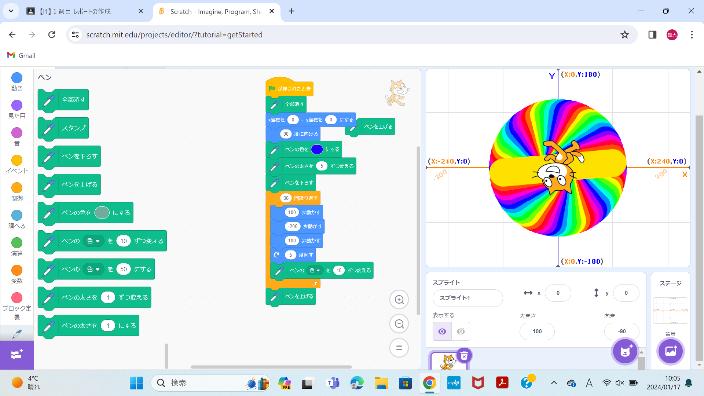

1週目のレポート ： 公大高専１年実習I-1
B班30番 青いみかん
第1週目
1-1 サイエンスアート

1.内容
スクラッチを使って線を書くプログラムを作った。回転するほど線の太さは太くなり、色も変化し続けるようにした。
2.感想
人生でプログラミングに取り組む機会が少なかったこともあり、時々難しく感じた。 練習を重ねるごとに徐々にプログラミングに慣れ、授業で作ったプログラミングを改良し、オリジナルのものを作れた。 Ｄコースでもプログラミングを取り組んだが、座標指定をするのは今回が初めてだった。
1-2 ゲーム
1.内容
スクラッチを使い上から降ってくる障害物をキャッチするとポイントが増えるプログラムを作成した。
2.感想
簡易的なゲームだが、スクラッチを用いてプログラミングを構成し、自分の力で作ることができた。 時々先生や友人を頼ることもあったが、ほとんど自分の力でプログラミングを進められたので大きな達成感を得られた。
1-3 ホームページ作成
私のホームページ
1.内容
githubを使って自分のホームページを作る。
2.感想
ホームページを作るのは難しいものだと予想していたが、基礎的なものではあるが想像よりも簡単に作れてしまったので驚いた。 背景やフォントなど、今よりも工夫できるところは数えきれないほどあるので、今後も学びたいと思った。 そしてホームページは簡単に作れるが、偽の情報も簡単に流れてしまうことを実感したので、インターネットの扱いにさらに気を付けようと思った。